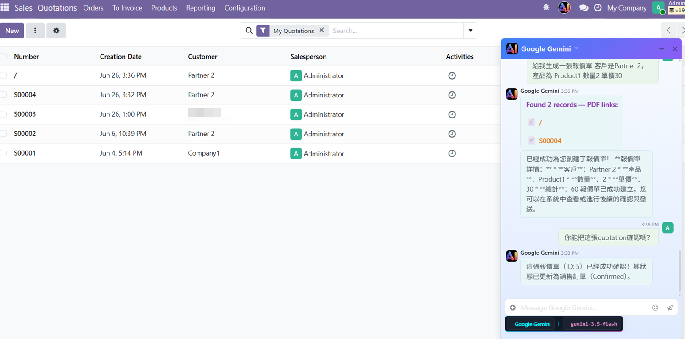
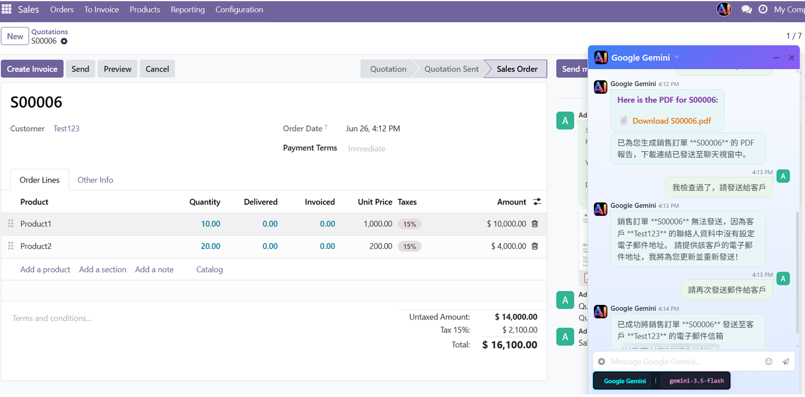
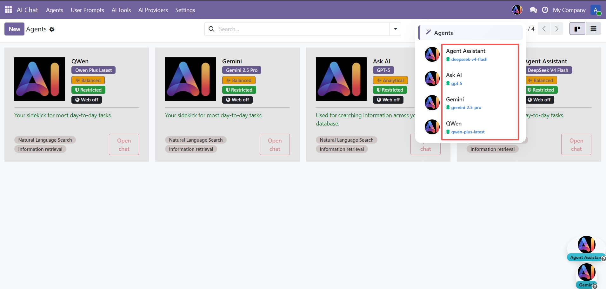
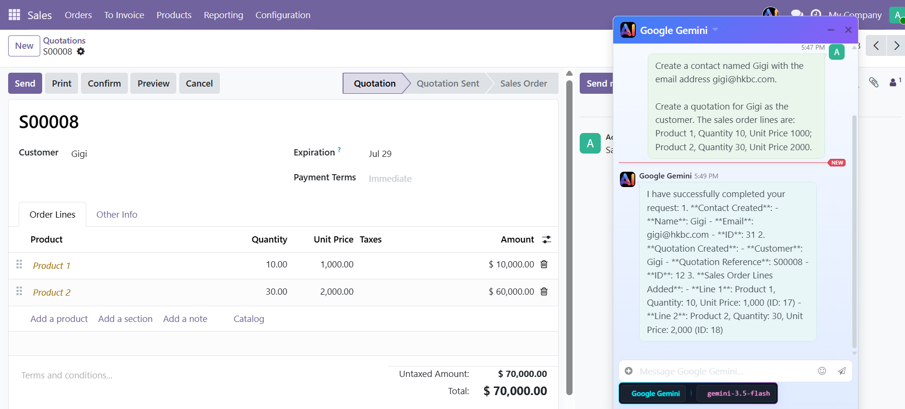
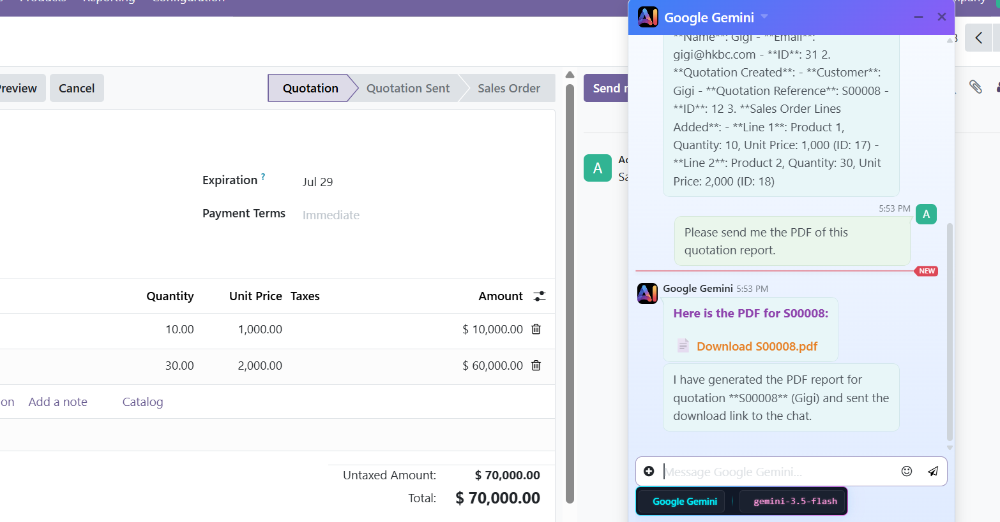
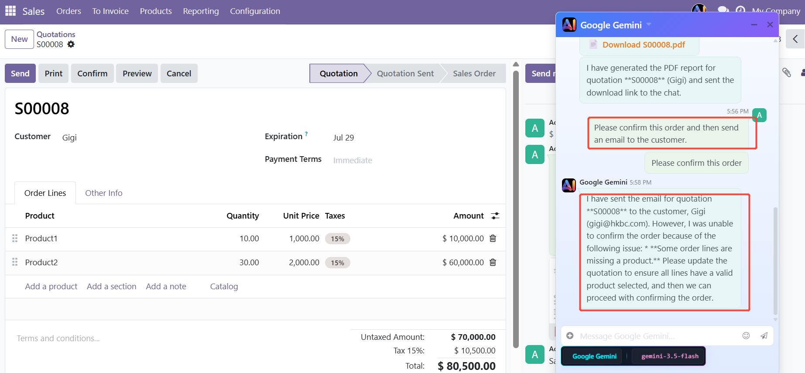
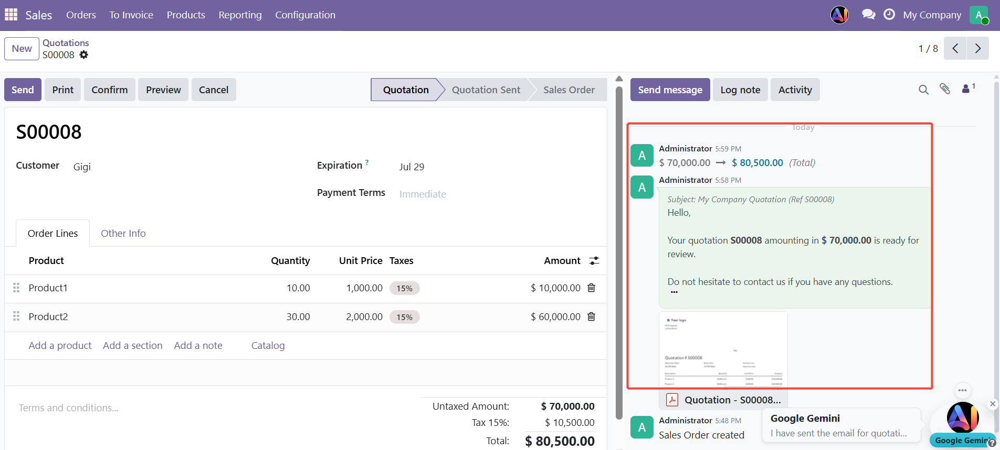
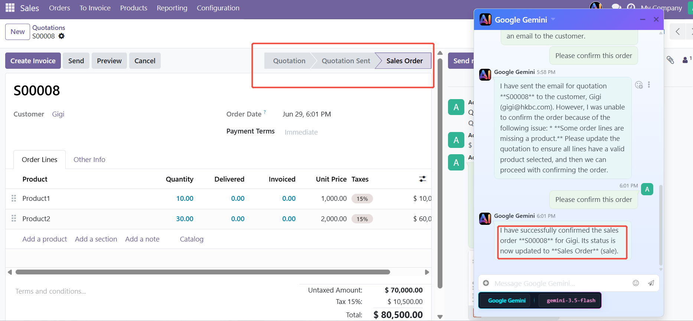
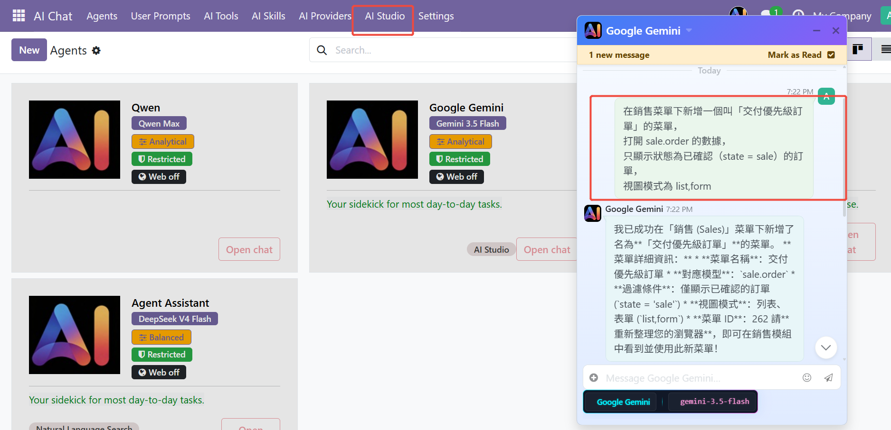
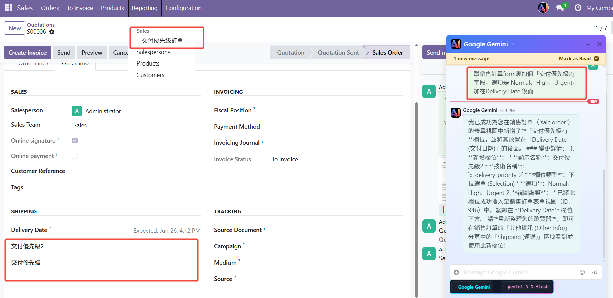

Community
Enterprise
V19
AI Chatbot Enhance | RAG & Vector Search | Odoo Query & Record Automation | AI Skills | AI Tools| AI Copilot | AI Assistant for Discuss | AI Studio | Studio | Odoo Studio
A powerful, all-in-one AI orchestration module designed for Odoo. Effortlessly deploy and configure various large AI models while expanding their capabilities with advanced Retrieval-Augmented Generation (RAG) using your own documentation and web URLs. Armed with OS-level integration features, this module goes beyond simple chat, driving intelligent automation, contextual data analysis, and autonomous workflow execution directly within your Odoo environment.



Multi-LLM AI Assistant.Configure and manage multiple LLM providers natively within Odoo for AI-driven automation and knowledge retrieval.



RAG & Knowledge Base (File & URL):
- Document Ingestion: Index and vectorize uploaded files (PDF, DOCX, TXT, etc.) directly within Odoo as knowledge sources. - URL Ingestion: Crawl and index web pages via URL to keep your knowledge base current with online content. - Vector Semantic Search: Retrieve the most contextually relevant content using pgvector-powered cosine similarity search. - Grounded Responses: AI answers are augmented with retrieved knowledge chunks, reducing hallucination and improving accuracy.

AI-Powered Odoo Record Operations:
- Natural Language Queries: Ask AI to retrieve business records — customers, sales orders, invoices, inventory, and more — without writing domain queries. - Record Creation: Instruct AI to create new records (leads, contacts, purchase orders, etc.) directly via conversational input. - Record Updates: Update existing Odoo records through natural language commands, with field-level precision and validation. - Multi-Model Support: AI operations work across any configured LLM provider, ensuring flexibility without vendor lock-in.


AI All-Round Skills:
Core AI Capabilities for Odoo Integration:
- Comprehensive Odoo Operation Management: Empower the AI to seamlessly interact with your Odoo
database. It autonomously executes core CRUD (Create, Read, Update, Delete) operations, manages
records, and instantly generates and dispatches complex PDF reports without manual intervention.
- Industry-Specific AI "Skill Packages": Deploy tailor-made, automated workflows designed for
specific
sectors. In the Sales module, for example, the AI can orchestrate the entire end-to-end process:
drafting quotations, sending PDF previews for client review, processing approvals or
cancellations,
and triggering automated follow-up emails.
- High-Precision Workflow Execution: Each industry package is pre-configured with a robust
sequence of
AI-driven actions. This ensures that complex, multi-step business processes are executed
precisely,
eliminating human error and strictly adhering to your business logic.
- The "Universal Skill" Configuration Engine: Experience limitless extensibility. Through our
proprietary Universal Skills framework, absolutely any existing method, action, or custom module
within Odoo can be mapped, configured, and executed by the AI. If Odoo can do it, our AI can
automate it.
- 全面的 Odoo 运维管理：赋能 AI 与您的 Odoo
数据库无缝交互。它能够自主执行核心 CRUD（创建、读取、更新、删除）操作，管理
记录，并即时生成和发送复杂的 PDF 报告，无需人工干预。
- 行业专属 AI“技能包”：部署专为
特定
行业量身定制的自动化工作流程。例如，在销售模块中，AI 可以协调整个端到端流程：
起草报价单、发送 PDF 预览供客户审核、处理审批或 取消订单，
以及触发自动后续邮件。
- 高精度工作流程执行：每个行业包都预配置了一套强大的
AI 驱动操作序列。这确保了复杂的多步骤业务流程能够 精准执行，
消除人为错误，并严格遵循您的业务逻辑。
- “通用技能”配置引擎：体验无限的扩展性。通过我们
专有的通用技能框架，Odoo 中任何现有的方法、操作或自定义模块
都可以被 AI 映射、配置和执行。如果 Odoo 能做到，我们的 AI 就能
自动完成。
Sales industry packages:
AI creates contacts and quotes:

AI sends a PDF to the user for viewing :

AI confirms the quote and sends the email (here you can see that AI automatically corrects errors):

AI sends emails:

AI confirms the quotation :

Other industry packages, freely configurable:
Other industry packages. For example, in the HR industry, AI can automatically generate
payrolls, send them out, calculate salaries, and approve leave requests. All of these can be
configured and implemented using the versatile skills.
AI Studio:
Field Operations:
Create custom fields (char, text, integer, float, boolean, date, datetime, selection, many2one, many2many, monetary, html, binary) Automatically add x_ prefixes, validate name duplicates, handle selection options and many2one associations
View Operations
Inject fields into any location in an existing view (after/before/inside/replace) Create new list, form, and Kanban views from scratch Support injecting raw XML such as buttons into views (using the extra_xml parameter)
Query Tools
Search all Odoo models Search fields by name or label (solves the "don't know the technology name" problem) List all views for a specific model View view structure and provide safe XPath suggestions View the raw arch_db of a view (for debugging)
Menu creation and placement
Supports custom menu creation and placement anywhere.


If you have any questions, please contact me at 18438630181@163.com